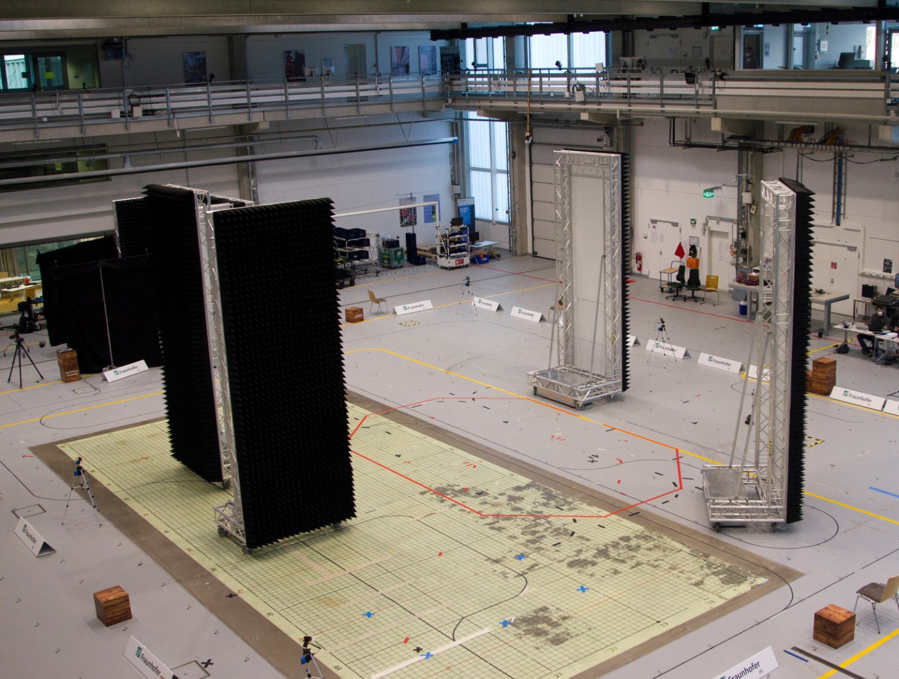

Fingerprinting Dataset for Positioning

UWB and 5G channel impulse response datasets for data-driven indoor positioning in difficult radio environments.
Overview
Two independently recorded training and test datasets support UWB- and 5G-based fingerprinting in challenging non-line-of-sight (NLoS) environments.
The measurements pair channel impulse responses (CIR) with timing observations and ground-truth positions. Reflective and absorbing structures create multipath and shadowing.
Measurement setup
UWB recordings use Decawave DW1000 devices in a two-way-ranging setup (499.2 MHz bandwidth, 4 GHz center frequency, around 3 Hz). Each burst contains six synchronized CIR and ToF observations.
5G recordings use six software-defined base stations for downlink TDoA at 3.7 GHz and 100 MHz bandwidth; the recording rate is approximately 6.6 Hz. The industrial environment includes shelves, vehicles and reflective walls.
Data format & contents
- HDF5 format with A_ID (transceiver), B_ID (burst), TD (ToF/TDoA), TD_OFFSET, CIR_R, CIR_I, POS_X and POS_Y.
- UWB: synchronized CIR and time-of-flight measurements.
- 5G: CIR and time-difference-of-arrival measurements, both with 2D reference coordinates.
- Training and testing use separate trajectories within each environment.
Download files
Download links to the published data files are provided below. Large datasets are not included in the GitHub Pages repository.
Fraunhofer IIS
This dataset is published in cooperation with Fraunhofer IIS. Additional release details and supporting material are available on the Fraunhofer IIS dataset page.